GENIE
Recreating a world model for Doom
Introduction
The generation of interactive scenes is insanely cool. From Etched and Decart’s Oasis to General Intuition’s MIRA, the use of world models as playable environments is fascinating. Because of our everlasting curiosity, Kuan and Nathan recreated Google’s Genie 1 paper specifically to run Doom on Google’s Fly connectome.
Goal
generating doom frames on the fly (no pun intended)
Given recent frames and a player action, the world model predicts what the player sees next, making the generated Doom scene playable.
Context on Genie
Genie showed that large-scale unsupervised learning from unlabelled video could produce action-controllable environments. Through the use of platformer game data, DeepMind researchers created a world model which could turn image prompts into playable scenes, without ground-truth action labels. Text prompts could first be turned into images using a separate text-to-image model.
Peak signal-to-noise ratio (PSNR) measures how close the predicted image is to the real image via mean squared error, in decibels (dB). Genie uses the change in PSNR between inferred and random actions to measure controllability; reconstruction PSNR alone does not prove that a world is controllable.[1]
The Genie paper is made of three distinct components: a latent action model, a video tokenizer, and a dynamics model. The three models collaborate together in order to achieve action-controllable video generation without action labels.
Differences between our implementation and the original Genie
- 8 ST-transformer blocks in our smaller dynamics model versus 48 for Genie.
- Hyperparameter differences (compute gap).
- Genie had about 1.1 billion frames; our draft reports 144,000 for LAM and dynamics, with a larger 600,000-frame corpus for the tokenizer.
- 3 passes of MaskGIT at play time, rather than the paper’s 25.
- Data is only one specific game relative to their multi-platformer dataset.
- We train the LAM separately and freeze it for dynamics training; the paper co-trains LAM and dynamics.
| Model | Ours | Genie | Ratio |
|---|---|---|---|
| Tokenizer | 388.0M | 200M | 1.9× bigger |
| LAM | 68.6M | 300M | 4.4× smaller |
| Dynamics | 35.2M | 10.1B | 287× smaller |
| Total | 491.8M | 10.7B | 22× smaller |
High-level summary
- The video tokenizer turns the video frames into a smaller, richer latent space for the dynamics model.
- The latent action model takes in a batch of frames, and maps the actions between each frame.
- The dynamics model takes in the video tokenizer output and the latent action model output, and predicts the next frame’s tokens. The tokenizer’s decoder turns those tokens into an output frame.
Dataset
We used Pdoom’s Doom dataset. The dataset consists of about 10 million frames, roughly 700 shards, with each shard holding 100 videos. We trained our Genie implementation on 42 shards worth of data (4,200 videos). Each image was 80 × 60 pixels. We resized the frames to 90 × 160 and padded the bottom to 96 × 160, matching the model’s input dimensions.
The Doom dataset was a supervised dataset with labeled data, but our implementation did not use the action labels for training. However, the frame order helped us align each action with its transition. In the dataset, the consecutive frames barely differ from one another. Therefore, when creating the LAM, we sourced every fourth frame to visualize greater differences.
How the pieces connect
Here’s how the three pieces connect. During training, the tokenizer and LAM look at the same clip: the tokenizer gives us 960 visual token IDs per frame, while the LAM gives us one 32-number action vector between frames. The dynamics model learns to fill in hidden visual tokens, using the earlier frames and the action leading into each frame.

At play time, our key press picks an action code instead. MaskGIT fills in the next frame’s token IDs, and the tokenizer’s decoder turns those IDs back into pixels. Those new tokens then become the context for the next step; we do not need to re-encode the generated image.
Two vocabularies, not one: the tokenizer has 1,024 visual codes; the LAM has 8 action codes. Both store 32-dimensional vectors, but those vectors serve different purposes.
VQ-VAE
The vector-quantized variational autoencoder (VQ-VAE) follows the traditional encoder/decoder paradigm with one crucial twist: quantization.
Quantization allows for the creation of a codebook, effectively storing learned representative feature vectors extracted from training video.
Open the complete VQ-VAE drawing
Input preparation
B batches of T video/gameplay frames, where
each frame is 96 by 160 pixels in RGB channels, serve as input.
The tensor at this point is [B, T, 96, 160, 3].
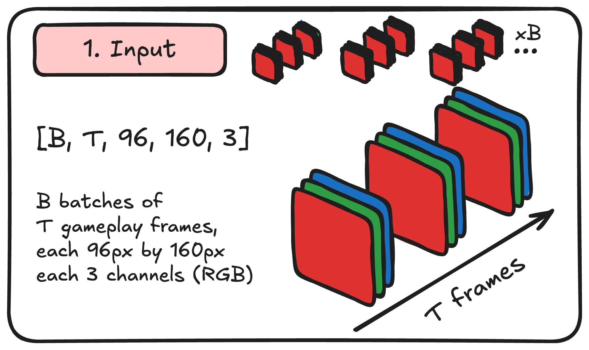
Patchification
Patchification prepares and enriches the video data for the dense upcoming transformer layers. Each frame is first broken into chunks of 4 × 4. A 96 × 160 image thus becomes a 24 × 40 grid of patches, across 3 channels. Those patches are flattened without much care. Thus, by combining patch dimensions with channels, we are left with 960 “patches” (flattened), of 48 values. Until now, no image values have been modified.
A linear layer projects the 48 pixel values of each of the 960 patches into 512 dimensions. Every patch now holds a 512-dimensional vector describing its features.
Self-attention without positional information is permutation-equivariant: reordering the tokens reorders the outputs. Thus, every token vector must encode its spatial position. In the case of a spatiotemporal transformer, it must also encode its temporal position.
As there are T frames across the time axis, for the same location on every frame (matching patches), they get the same 512-dimensional spatial encoding vector added to their feature vectors.
For all patches belonging on the same frame, they get the same 512-dimensional temporal encoding vector added to their feature vectors.
Those positional encodings are fully trainable.
The hope is that a fully trained VQ-VAE will produce rich spatial and temporal encodings for any input video token.
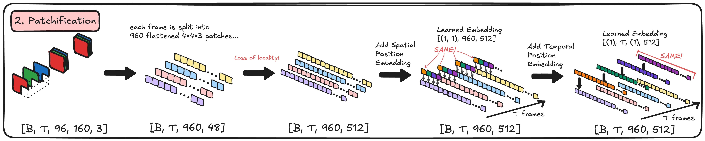
Chained transformer blocks: the encoder
Our enriched input is further enriched through 12 spatiotemporal transformer blocks to share information among themselves (the encoder).
A transformer outputs a tensor the same shape as its input. Thus the ease of being chained together.
The tensor output from 12 spatiotemporal transformer blocks contains rich, global information within each frame and its causal history.
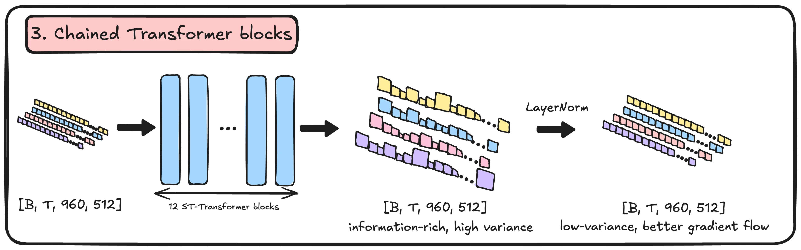
Quantization
Quantization serves to create a codebook to represent context.
Twelve transformer blocks deep, each position in the
[B, T, 960, 512] tensor contains more than its
original patch: it has gathered information from other patches and
earlier frames.
[B, T, 960, 512] is then projected down to
[B, T, 960, 32].
With an untrained encoder, [B, T, 960, 32] has no
useful learned meaning. With a trained encoder and a trained
codebook, each 32-number vector gets discretized into a single
scalar token ID.
If “patch” #456 of the 960 is closest to the 278th entry in the
codebook, its token ID is 278. Another example: if “patch” #872 is
closest to entry 113, its token ID is 113. The full tensor of IDs
has shape [B, T, 960]; looking those IDs up retrieves
vectors of shape [B, T, 960, 32].
Lcommitment and Lcodebook serve to bring the values of the codebook and the transformed tensor closer (thus updating the weights of the encoder and the stored codebook vectors only).
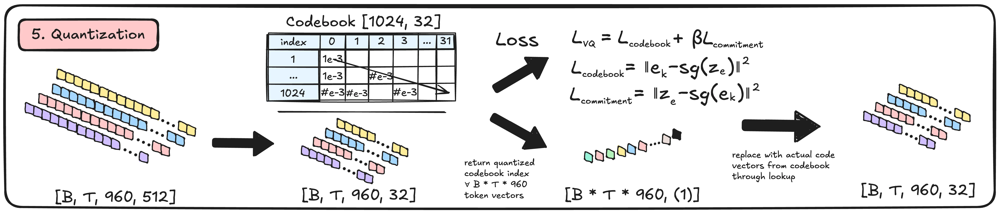
Chained transformer blocks: the decoder
The decoder uses the same type of blocks as the encoder, but operates at a higher token dimension of 1024 instead of 512, with 20 blocks rather than 12. We account for this flexibility in our implementation of the SpatioTemporalTransformer.
After the decoder blocks, normalization and a linear pixel head
produce a tensor of size [B, T, 960, 48], ready to be
reshaped into a video with corresponding size as the raw frames at
the very beginning of this article.
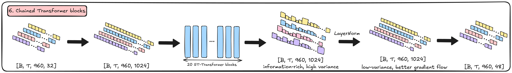
Reconstruction
Reconstruction turns the flattened
[B, T, 960, 48] into recognizable video.
Reconstruction loss propagates through the decoder as well as the
encoder, using a straight-through gradient across quantization.
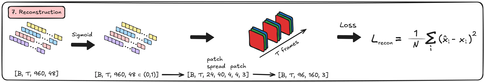
Now is the right time to break down the long-awaited spatiotemporal (ST) transformer.
Spatiotemporal transformer
Open the complete ST-transformer drawing
Input preparation
We’ve already presented the input to the transformer in the
context of the VQ-VAE: assuming the tensor goes into the first
transformer block of the encoder,
[B, T, 960, 512] contains unshared information about
the 960 patches per frame, with spatial and temporal positioning.
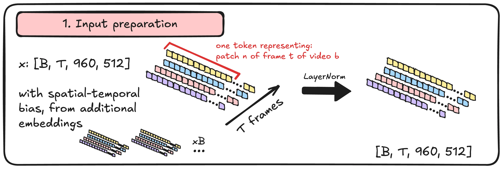
Spatial attention: setting up Q, K, V vectors
You should be familiar with the transformer architecture.
Q, K and V tensors are three learned projections of the main
[B, T, 960, 512] tensor. Each projects from dimension
512 to 512 along the last axis.
Q and K vectors drive the attention mechanism by pairing relevant “patches”, tokens. V vectors are one abstraction above “raw” pixel values. Sure, we could directly use the raw pixel values, but a learned linear projection lets the model choose which features to share, rather than simply mixing RGB values.
Q, K, V each contain 960 vectors of dimension 512 per frame. Every “patch” identifies now as a token. Then, Q, K, V each get reshaped into 8 attention “heads”, with isolated mechanisms for the next few steps. This is achieved through a naive “cut” of the feature dimension: channels 0 to 63 go to head 1, channels 64 to 127 go to head 2, etc. Every head still sees all 960 tokens.
This prepares for spatial attention, and allows for “patches”, tokens, to “see” each other, within a frame. They cannot see patches belonging to other frames than their own.
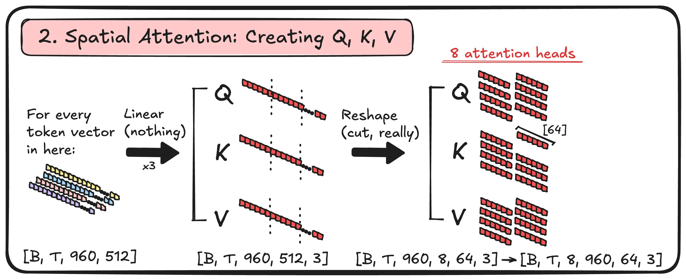
Spatial attention-logit matrix
The attention matrix values entirely depend on how good the weight matrices generating Q and K are.
It is easier to understand its mechanism by analyzing a fully trained model:
- A fully trained model can strongly correlate tokens with high affinity. What does high affinity mean? We can only guess. For a video VAE, we can assume learned spatial relationships, but an attention map alone does not establish semantics or causality.
- Scaled Q–K dot products are normalized with softmax. Multiplying these attention weights by V produces a weighted mixture of value vectors, which is projected back into the residual stream.
The above explanation assumes only one attention head. Eight attention heads are used in the tokenizer encoder: the hope is that the different initializations and learned weights for Wq, Wk, Wv would push each attention mechanism to focus, to attend, to pair tokens based on different criteria. A naive, fantasy idea would be: attention head 1 looks for relative object position, attention head 2 looks for causality, attention head 3 looks for lighting, etc. (HIGHLY INACCURATE).
A linear output projection combines the output of all 8 attention heads and prepares that tensor to the right size to pass through the next part of the transformer block.
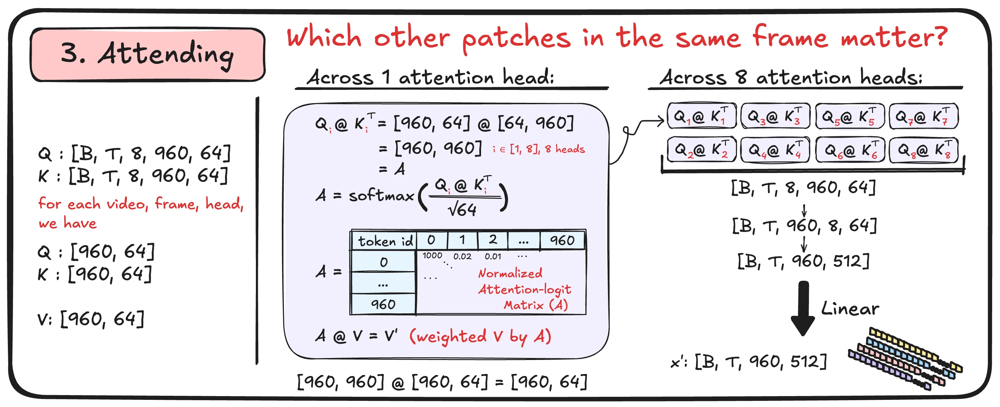
Residual spatial attention connection
A residual connection adds the attention update back to the input:
x ← x + attention(LayerNorm(x)). It preserves a
direct path for the existing representation and its gradients; it
does not guarantee that updates are small.
Temporal attention: setting up Q, K, V vectors
The initial tensor is split up such that each patch only “sees” “itself” across frames. It sees none of the other patches different in location.
The rest of the attention mechanism remains identical to spatial attention, with a causal mask preventing a frame from attending to its future.
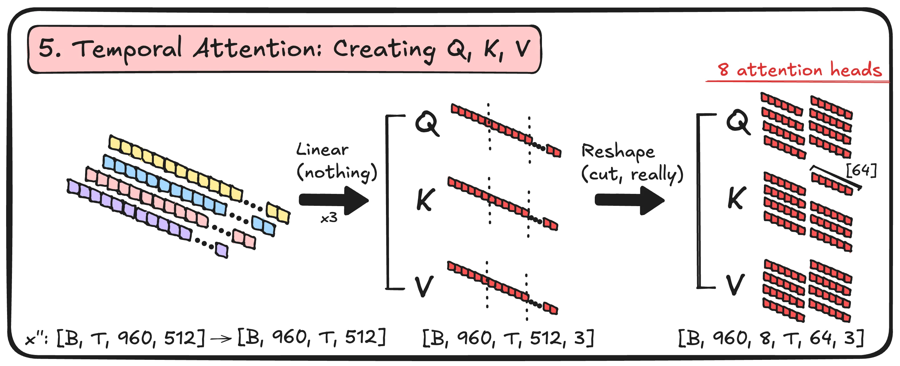
Temporal attention-logit matrix
Same idea, different axis, lol. For each patch position and each
head, Q and K now produce a [T, T] attention matrix
rather than [960, 960]. The causal mask hides future
frames before softmax. Multiplying those weights by V lets a patch
gather information from the same location in the current and
earlier frames.
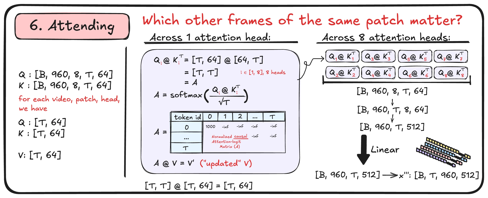
Residual temporal attention connection
As with spatial attention, the temporal attention update is added back to the input.
Feed-forward neural network
The feed-forward neural network consolidates acquired features through the spatial and temporal attention blocks.
For each token independently, it expands 512 features to 2048,
applies GELU, and projects back to 512. One last residual addition
completes the block. The shape stays
[B, T, 960, 512], ready for the next block.
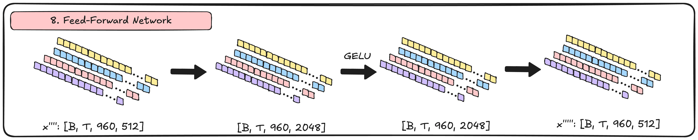
The three residual connections
Latent action model
The latent action model is made up of three main parts for training:
- Encoder
- Codebook
- Decoder
The goal of the latent action model is to take in a sequence of frames, and output an action which caused the frames to change. E.g. given a batch of consecutive frames up to f, how do we know what the future frame f + 1 will be given action a?
The encoder takes a sequence of frames and outputs 32 numbers describing each transition. These are continuous features, not 32 IDs. The output is then given to the codebook, which turns the 32 numbers into one of 8 learned vectors (these are the mapped actions) and replaces the encoder’s output with whichever of the 8 is closest. The closest output is measured via squared Euclidean distance.
This forces every vector into one of only 8 mapped actions (the codebook’s limit). Additionally it gives each action an ID which can later be used to map to one of the 8 specific actions. The decoder takes that codebook vector together with the previous frames, and predicts the next frame. During interactive generation, the LAM decoder is unused, and the keys the user clicks pick one of the 8 codebook vectors directly. Our server still uses the LAM encoder once to infer actions inside the initial prompt clip.
LAM encoder
During training, the encoder takes in a batch of images with
height, width, channel dimensions of [96, 160, 3].
The encoder’s input is [B, T, H, W, C]: batches,
frames, height, width, and RGB channels.
Batches help with the throughput of how much the model learns per iteration. It is constrained by the amount of compute you have. The number of frames determines the model’s context window. The number of channels, along with width and height are just the size of the frame as well as the red, green and blue channels of the image.
We input four batches (more batches = more clips trained) of
16-frame clips. Next we patch the images, turning a
[4, 16, 96, 160, 3] tensor into
[4, 16, 60, 768]. Patching shortens the sequence so
attention is affordable.
Next, we apply one linear layer and 8 ST-transformer blocks to the patched frames in the smaller configuration described here. The goal of the ST-transformer is to create a latent space which can translate the image clips into actions.
Through the 8 blocks, the temporal transformer allows each frame
to see itself and the frames before it. With each timestep, the
transformer learns to map 16 frames into actions between each
frame. However, there are only 15 transitions between the frames,
so we drop the first encoded position, not the first
input frame. Before this step, we average over the 60 patches,
turning [4, 16, 60, 512] into
[4, 16, 512], and go through another linear layer.
[4, 15, 32] is the shape of the output of the LAM
encoder! Using this output, we apply the codebook to find which
specific action it maps to by computing distances and taking an
argmin.
NOTE: If the codebook is confusing, just think of it as a
dictionary which maps each 32-number vector in
[4, 15, 32] to one of 8 IDs. The IDs have shape
[4, 15].
After getting the specific index, we apply the index to get ONE specific mapping of an action. This way, each action is bound to 8 specific possibilities within the codebook, instead of any possible action.
This is the base, mean-pooled LAM architecture described in the draft. The repo also contains experimental encoders that preserve spatial differences; the checkpoint configuration selects the actual variant.
Original LAM encoder drawing
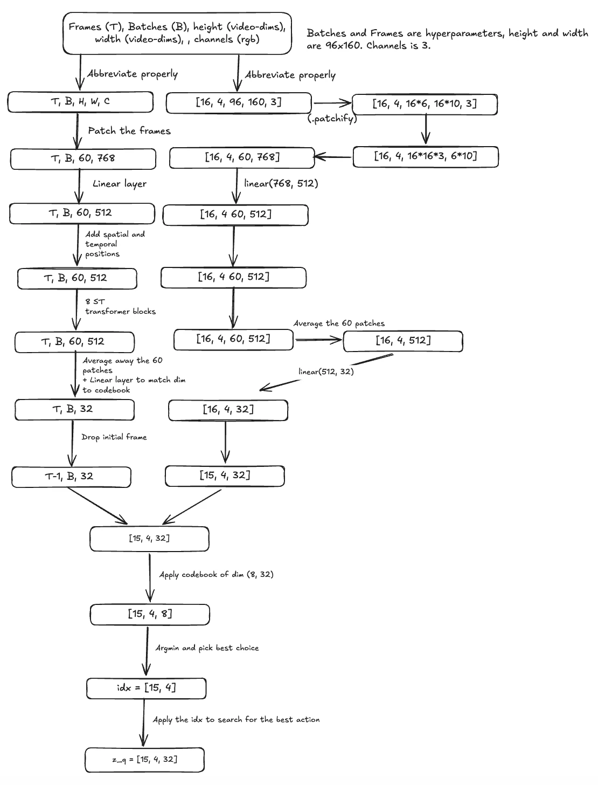
[T, B, …]. The implementation and corrected text
use [B, T, …]. “Drop initial frame” means discard
the first encoded position, not its input pixels.
LAM decoder
The LAM decoder takes in the action, and a continuous set of frames, and reconstructs the potential future frame f + 1. The decoder applies the same patching and linear-layer techniques as the encoder. We project the action vector from 32 to 512 dimensions, add a singleton patch axis, and add it to every patch of the corresponding conditioning frame.
After we deploy the series of 8 ST-transformer blocks and another linear layer to reformat the data to match what needs to be unpatchified, we also need to make sure the numbers are between zero and one, since the inputted images are divided by 255 (also between zero and one); therefore we apply a sigmoid function before we unpatch the frames. By unpatching the frames, we get an output prediction of how the predicted future image looks. Looking at the dimensions, we’ve successfully mapped an action output to an input frame.
Original LAM decoder drawing
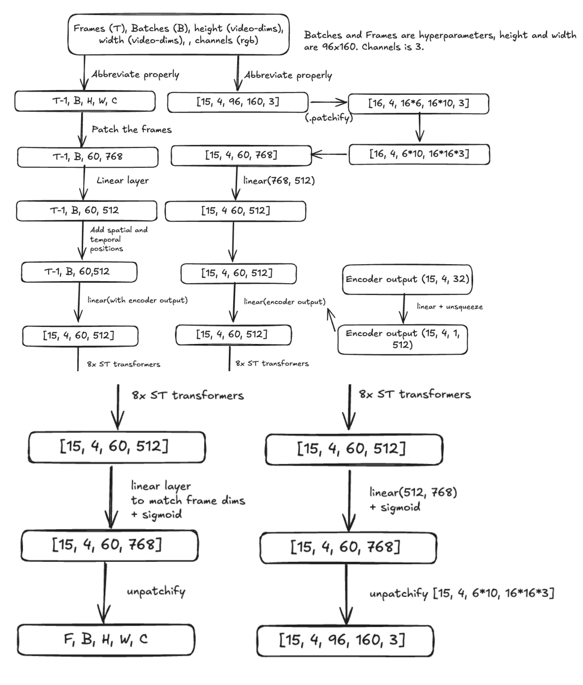
LAM training
To train the LAM via unsupervised learning, we first input the frames, batches, and images into the encoder. Afterwards, we take the encoder output and input it into the codebook to get the specific action vector it should do. Lastly, we take the action vector plus the previous frames and input them into the decoder to predict the future frames.
We improve the model with a quantization loss between the encoder features and the selected codebook vectors, plus a reconstruction loss between the predicted frames and the actual next frames. These use mean squared error; the quantization objective includes separate codebook and commitment terms. Reconstruction compares all 15 predicted frames against the shifted targets, not just the last frame.
Original LAM training graph
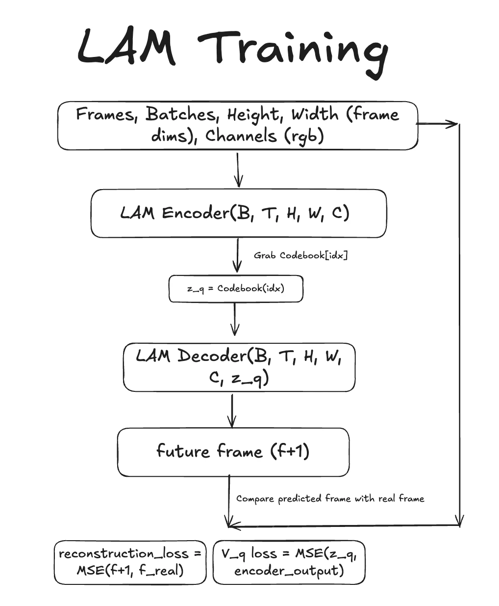
Dynamics model
The dynamics model is the final model in the Genie paper. It turns the output from the video autoencoder and latent action model into a new, future frame’s tokens.
Inputs and masking
We first input the autoencoder’s token IDs, each giving 1,024 options. Because we don’t want the model to see the answers at the positions it must predict, we mask those IDs and embed them into 512-length vectors.
We also input the latent action model output, which is first put through its codebook to get the specific action vector. We apply a linear layer, pad the frame axis, and unsqueeze to match the dimensions of the visual token embeddings. The pad inserts a zero action contribution for frame 0, which has nothing leading into it (15 → 16), and the unsqueeze adds the patch axis so one action gets added to all 960 patches of its destination frame.
Next, we combine the autoencoder vector and the projected action vector, along with spatial and temporal positional data. After, we put the tensor through 8 ST-transformer blocks, layer normalization, and a linear layer. Now, we have successfully created logits over the 1,024 codebook IDs at each of the 960 patch positions.
MaskGIT sampling
Instead of argmaxxing one specific ID, we sample candidates and refine them across three dynamics-model passes. Each pass keeps the most confident predictions and re-masks the least confident remaining positions. The schedule is cosine, not three equal thirds: with 960 patches, roughly 129 are fixed after pass 1, 480 in total after pass 2, and all 960 after pass 3. The resulting IDs are looked up in the tokenizer’s codebook, then passed to its decoder to compute an actual future frame.
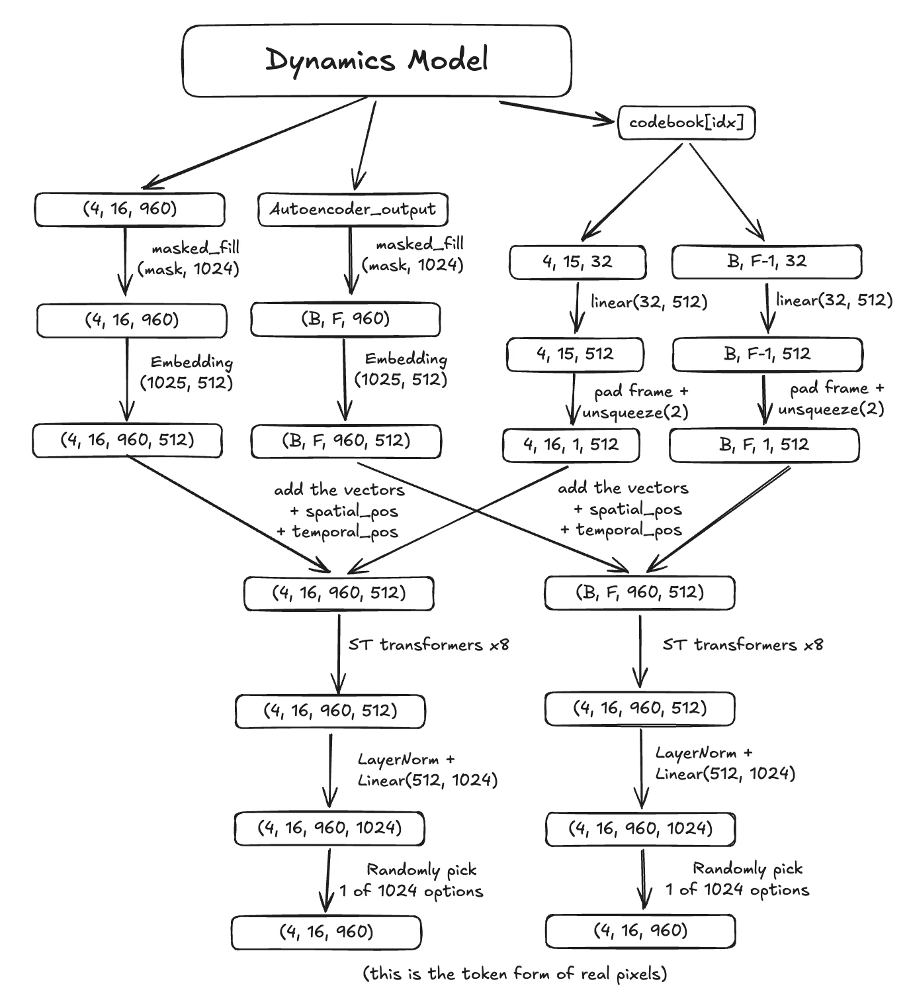
Training the dynamics model
We take a real 16-frame clip, tokenize it with the frozen autoencoder, and get its action codes from the frozen LAM. Then we sample a token-hiding probability between 50% and 100% for each clip, and hide tokens at random. Frame 0 is never hidden, since nothing leads into it and at play time it’s always part of the prompt you start from.
Hidden tokens get their ID swapped for 1024, the MASK entry, so the model genuinely cannot see them. It then scores all 1,024 options at every one of the 960 positions, and we compute cross-entropy against the tokenizer’s real IDs, but only at the hidden positions. Scoring the visible ones would just teach it to copy its own input. Through the masking, the model is forced to learn to fill in gaps from the surrounding patches.
The extra MASK entry is an input symbol, not a possible output image code. Dynamics predicts IDs 0–1023; only its own weights are updated in this training stage.[4]
Results
The archived tokenizer evaluation reached 37.43 dB PSNR on 256 held-out test clips, using 197 of its 1,024 codes. The final exported checkpoint later recorded 40.33 dB on four fixed validation clips, using 201 codes. These are different checkpoints and evaluation sets, so they are kept separate here rather than summarized as the draft’s roughly 42 dB.[5]
| Checkpoint | Evaluation | PSNR | Codes used |
|---|---|---|---|
| Step 5,500 | 256 test clips | 32.43 dB | 177 / 1,024 |
| Step 36,000 | Same test clips | 37.43 dB | 197 / 1,024 |
| Step 38,500 | Same test clips | 37.04 dB | 198 / 1,024 |
| Step 94,500 | 4 fixed validation clips | 40.33 dB | 201 / 1,024 |
Latent actions
The LAM measurements below come from the evaluation history stored inside the checkpoint itself, recorded on a fixed validation set at the end of each of its twelve epochs. Demo observations are marked where they appear.
The latent action model trained with no action labels at all, reached a reported ΔPSNR of 2.49, meaning its next-frame prediction is about 2.5 dB worse with a random code than with the one it inferred. Genie reports 1.91 for the 2.5B pixel-input model in its platformer ablation. That is a reference point, not a controlled comparison: the datasets differ, and Genie reports its metric at t = 4 while our scoring code also averages across transitions.
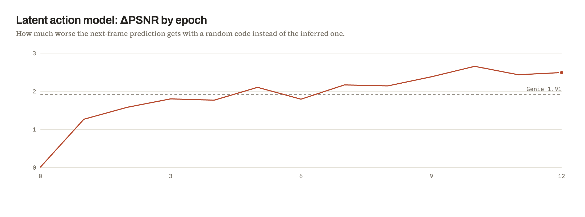
The codes also line up with real Doom inputs grouped into three visual motion classes (left, no turn, and right) 63.9% of the time against a 49.1% majority-class baseline. The reported effective code usage is 7.8 of 8: this is perplexity, not a fractional count of active codes.
One flaw is that no IDs learned to fire a weapon, and nothing learned to stand still in our observations. Training to fire the gun is hard to emulate as it changes comparatively few pixels; this may help explain why the 8-slot budget did not allocate a distinct firing action.
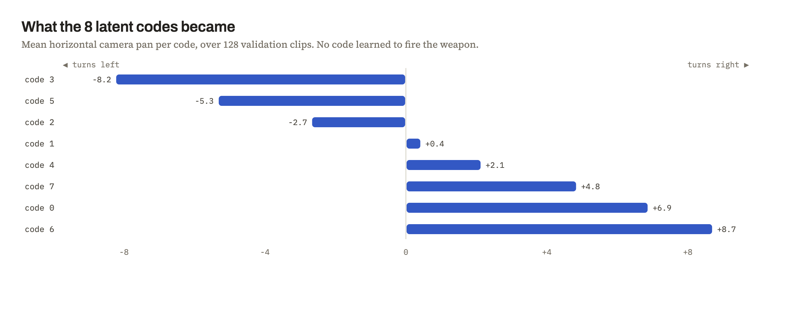
Dynamics model
The dynamics numbers below come from the evaluation history stored inside the deployed checkpoint, recorded every 500 optimizer steps on 128 held-out validation clips.
Six epochs of masked token prediction took about 14.5 hours on one A100. Cross-entropy on the hidden tokens fell from 7.10 at initialization to 1.94. That starting value is close to ln(1024) ≈ 6.93, the score for guessing uniformly among the 1,024 codes. The harder regime, where an entire unseen frame is hidden, settled near 3.66, and next-frame token accuracy reached 18.0%.
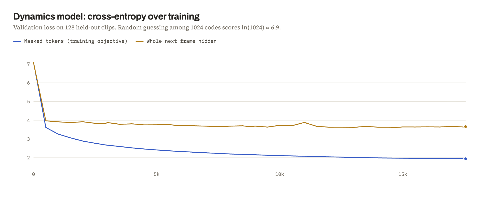
The number that separates a world model from a video predictor is the last one. We hide the next frame and predict it twice, once with the latent action the LAM inferred and once with a random code, then take the difference in cross-entropy. Zero would mean the action is ignored. It climbs to about 0.17 and is still rising at the end of training, which suggests the run stopped short of the model’s ceiling rather than reaching it.
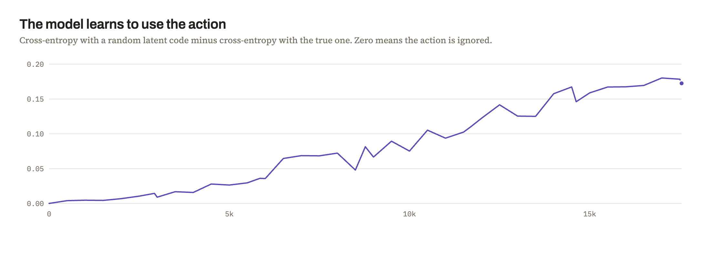
In pixels the picture is more modest. A generated next frame is reported at 25.55 dB against 25.47 dB for simply redisplaying the previous frame, and six frames into a rollout the gap widens to 24.1 dB against 23.3 dB. The direction is right, since a static frame decays as a rollout continues and a world model should not, but at this scale the margin over the trivial baseline stays small.
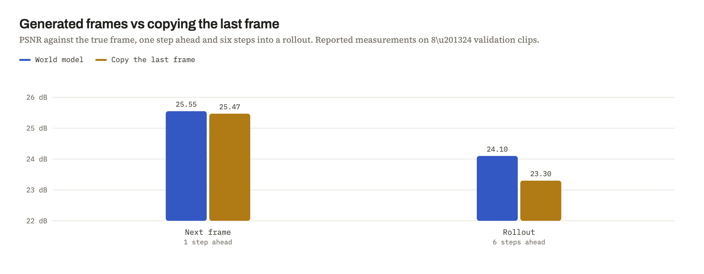
Conclusion
Overall, Kuan and Nathan trained an implementation of Genie with a dynamics model roughly one three-hundredth of the original dynamics model’s size (about one twenty-second for the full system, using the reported counts), where you can steer the result with WASD at about 5 frames a second in our demo.
The latent action model was surprisingly accurate. Given only raw frames, it sorted camera motion into eight buckets and reached a reported ΔPSNR above Genie’s platformer result, though not under a matched evaluation. In our observations, that gap grew over longer rollouts, and the action effect was still climbing when we ran out of time.
One cool attribute was memory within the world model. If one did a 360 in the model and saw a wall, you’d still see it if you did another 360. That was a qualitative demo observation, not a controlled test of persistent 3D geometry; the implementation keeps a finite context window. The roughly 5 FPS figure is likewise a demo observation, not an archived benchmark.
References
- Bruce et al. Genie: Generative Interactive Environments, 2024. Architecture, training protocol, and comparison figures.
- Repository hyperparameters and smaller dynamics training specification. Constructor defaults and experimental configurations are distinct.
- p-doom/doom-dataset. Local training manifest: 42 shards, 4,200 videos, 600,000 frames. Recorded publication data.
- Implementation: VQ-VAE, LAM, ST-transformer, dynamics training and sampling, and interactive inference.
- Tokenizer evaluation, 14 September 2026; final export metadata, 15 September 2026. Local metric excerpts and source paths. LAM metric definitions: training scorer.